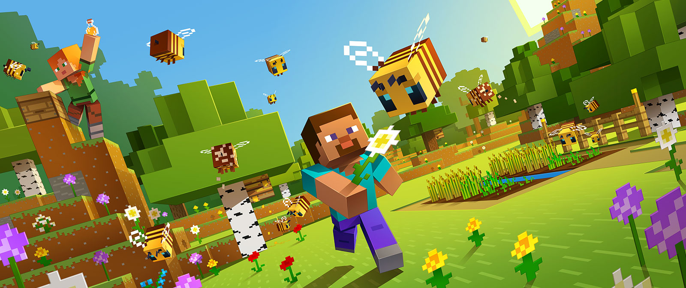

Information for Parents
As a parent you may be concerned, worried or just want to know more information about how video games may affect your child. First off, congratulations to you on doing some research! This is a great first step to do when picking a video game because from there, you will be able to see a lot of information such as what ages can play, if there is mature subject matter content, what goes on during the game, etc. There are many pros and cons to video games; this page will list some of the top concerns, benefits, and solutions to give some insight to parents.
According to Granic (2014), it is important to note that “the nature of these games has changed dramatically in the last decade, becoming increasingly complex, diverse, realistic, and social in nature; there positive effects of playing video games, focusing on four main domains: cognitive, motivational, emotional, and social.” Since this change, it will actually help with real-world psychosocial benefits. There are other factors to consider too; personal ones such as sex, age, trait aggression, and situation factors as it has an effect on the internal state when playing video games which includes cognition, arousal, and affect related to what have been played. For instance, helping other game characters during prosocial video game play may prime cognitions related to prosociality. Video game play may also affect mood and emotion, which can influence learning and behavior. So, it is important to consider how your child already is; if they are already violent, perhaps a violent video may not be best since it may evoke aggressive cognitions, which may increase aggressiveness and arousal (Greitemeyer & Mügge, 2014). If you want to fix a negative behaviour to a positive one such as how to play with others, find a game that includes teamwork or working with others.
Parents are sometimes hesitant to buy video games for their kid(s) or adolescent(s) because they worry about the negative side effects, especially for violent video games. Parents however should think about the positives to video games too as there are many. Even if you buy a kid friendly game, it could have bad effects as there are more factors to consider other than content. For example, moderation is key. Having your kid(s) or adolescent(s) play video games for hours is no good for so many health reasons such as risk for obesity or addiction. However, did you know that active video games (AVG) help prevent and reduce childhood obesity, and are the same and on some accounts better for children then doing exercise (G. Zao, 2015). This is information is good to know if you don’t have a backyard for regular daily play, bad weather, dangerous neighbourhood, etc. If you decide to buy a video game for your kid(s) or adolescent(s). If your child is spending too much time playing video games, make sure he/she has finished the tasks for the day such as homework, chores, ate, etc. This will be a nice reward for your kid to look forward to and it may even make your kid want to do his/her tasks faster!
Parents tend to worry that if their child is playing video games, they are not getting the chance to socialize and interact with other people. You may be surprised to learn that players often develop new friendships, have better social interaction with friends, as well as learn about teamwork and leadership” (e.g., Thompson, 2006; Gee, 2008). Whether your kid wants violent video games or prosocial video games, data from 98 independent studies with 36,965 participants revealed that for both types of games, there was a significant association with positive social outcomes (Greitemeyer & Mügge, 2014). If you are concerned about your child not socializing enough, try to find games where they can play online with others or multiplayer games so your child can play with someone else on the same system.
There have been lots of studies that suggest aggressive video games are not a predictor of later aggression or reduced prosocial behavior in youth later in life (Ferguson and Wang, 2019), so try not to worry too much about your child too much as it would 27 hours a day of M-rated game play to produce clinically noticeable changes in aggression. Once again though, there is so much debate on this topic it is hard say that if kids play a certain game it can be bad or good for them. There are a lot of pros and cons to video games, whether it is a kid friendly game or a violent game; make sure that there are more benefits than issues, do some research on the different factors to make sure it is a right fit for your child, every kid is different!
*If you would like to see the effects on the brain from video games, please check out the Ted Talks by Daphne Bavelier who is a French cognitive neuroscientist specialized in brain plasticity and learning.
https://www.youtube.com/watch?v=FktsFcooIG8